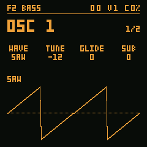
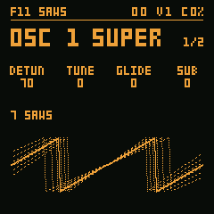
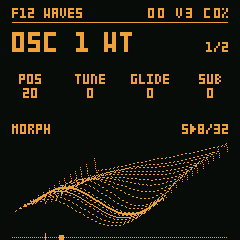
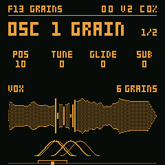

STDF2 BASS
Oito ondas (SAW, SQR, TRI, SIN, RAMP, FOLD, FM, OCT), cada uma moldada pelo PW, com SUB e NOISE.
O ObsSynth FM-1 é um firmware de sintetizador para o M-VAVE FM-1. Este é o firmware de verdade, compilado para WebAssembly: ligue e toque com o mouse, o teclado do computador ou um clip.
No simulador, ou num FM-1 pelo USB. Os acid tocam no F9 SUPER.
Escolha um e toque Tocar (ou clique duas vezes nele).
Carregando…

Oito ondas (SAW, SQR, TRI, SIN, RAMP, FOLD, FM, OCT), cada uma moldada pelo PW, com SUB e NOISE.

Sete serras desafinadas por oscilador; no UNI as quatro vozes numa nota só. O som do acid.

Quatro bancos de wavetable, sem aliasing; um LFO varre a posição (POS).

Grãos de ORGAN, BELL ou VOX, na altura da nota: POS, SIZE, DENS, SPRAY.
Tudo funciona no simulador acima como no FM-1. A tela mostra uma página por vez; os quatro knobs editam os seus quatro valores. Os botões que não aparecem aqui ainda não têm função.
A tela mostra uma página por vez: o nome dela em cima, com a oitava, as vozes soando e a CPU, e os quatro valores embaixo dele, e o desenho da página na faixa de baixo. SELECT passa de uma página para a outra; os quatro knobs editam as quatro colunas, na ordem.
SELECT as páginas, KNOB1 a KNOB4 os valores, HOME a página +.
OSC 1 é a fonte. WAVE escolhe SAW, a mais brilhante, SQR, oca, TRI, suave, ou SIN, pura (e mais quatro, abaixo); SAW e SQR são limitadas em banda, sem aliasing nos agudos. TUNE transpõe em semitons, ±24. GLIDE faz cada nota nova deslizar da anterior, de instantâneo até quase um segundo. SUB soma um oscilador uma oitava abaixo; o volume do synth, VOL, fica na página AMP (EDIT).
SEL (OSC 1): KNOB1 WAVE, KNOB2 TUNE, KNOB3 GLIDE, KNOB4 SUB.
Gire ALGORITHM numa página de oscilador e ele troca de motor; o título mostra qual. STD são oito ondas: SAW, SQR, TRI, SIN, RAMP (a serra descendo), FOLD (um seno dobrado), FM (um seno modulado pela própria oitava) e OCT (serra com a serra uma oitava acima); o PW do OSC + vira SHAPE e molda cada uma (a largura do SQR, a simetria do TRI, o quanto o FOLD dobra, o índice do FM, o nível da oitava do OCT). SUPER são sete serras, uma no centro e seis desafinadas em volta: o primeiro knob vira DETUN (o quanto elas se afastam) e, com HOME, SIDE (o volume das de fora). WT lê uma wavetable: o primeiro knob vira POS, a posição na tabela, e com HOME TABLE escolhe o banco (BASIC, S>SAW, HARM, MORPH). A tela mostra a onda daquela posição e uma régua da tabela com um marcador, que anda sozinho quando um LFO move o POS. Um LFO com DEST POS varre a tabela sozinho (o preset WAVES).
GRAIN toca uma amostra (ORGAN, BELL ou VOX, uma voz passando pelas vogais) em grãos: pedacinhos curtos, cada um com sua janela, na altura da nota. O primeiro knob é POS, de onde os grãos saem; com HOME, SMPL a amostra, SIZE o tamanho de cada grão (10 a 500 ms), DENS quantos por segundo e SPRAY o quanto cada um se espalha em volta do POS, ao acaso. A tela mostra a amostra e, enquanto uma nota soa, os grãos vivos: o arco de cada janela embaixo e, na amostra, uma barra onde ele está lendo, do tamanho da abertura da janela. Um LFO em POS passeia pela amostra (os presets GRAINS e CHIMES).
ALGORITHM o motor; KNOB1 WAVE / DETUN / POS / POS; HOME: KNOB1 PW / SIDE / TABLE, e no GRAIN os quatro: SMPL SIZE DENS SPRAY.
OSC 2 é um segundo oscilador em cada voz, misturado ao primeiro antes do filtro. SEMI o afasta em semitons (±24: uma quinta, uma oitava), FINE o desafina de leve, até uns 32 cents, para o som "gordo" de dois osciladores. MIX diz quanto se ouve dele: em 0 só o OSC 1, em 127 só o OSC 2.
SEL duas vezes (OSC 2): KNOB1 WAVE, KNOB2 SEMI, KNOB3 FINE, KNOB4 MIX.
AMP ENV é o envelope de volume de cada nota. ATK é a subida, de 1 ms a uns 4 s; DEC a queda até SUS, o nível que fica enquanto a tecla está apertada; REL a queda depois de soltar. Com SUS em 0 a nota soa como uma percussão e acaba sozinha.
ENV (ou SELECT até AMP ENV): KNOB1 ATK, KNOB2 DEC, KNOB3 SUS, KNOB4 REL.
FILTER é um low-pass de 12 dB (24 dB no SLOPE do FILTER +), de 50 Hz a 18 kHz. CUT é o corte; RESO a ressonância, que realça o corte até quase cantar. ENV diz quanto o envelope do filtro abre (ou, negativo, fecha) o corte em cada nota. KEY faz o corte seguir a nota: em 100% ele sobe uma oitava a cada oitava tocada, e as notas agudas não ficam abafadas.
SEQ (FILTER): KNOB1 CUT, KNOB2 RESO, KNOB3 ENV, KNOB4 KEY.
FILTER ENV é um segundo ADSR, só do filtro. Com CUT baixo, ENV alto e um DEC curto, cada nota começa aberta e fecha num instante: o "pluck" de um baixo. Com ATK longo, o som abre devagar, como um pad.
ENV duas vezes (ou SELECT até FILTER ENV): KNOB1 ATK, KNOB2 DEC, KNOB3 SUS, KNOB4 REL.
Dois LFOs, cada um com um destino. WAVE escolhe SIN, TRI, SAW, SQR ou S&H (um nível ao acaso a cada ciclo); RATE vai de 0,05 a 40 Hz; DEST escolhe o que ele move: PITCH (vibrato, até ±12 semitons), CUT (o filtro abrindo e fechando), RESO, AMP (tremolo), MIX (entre os dois osciladores), POS (o WT e o GRAIN), ou um oscilador só: PIT1 / PIT2 (a altura de um), SHP1 / SHP2 (o SHAPE, o PW), POS1 / POS2, DET1 / DET2 (o DETUN do SUPER), e NOISE. DEPTH é o quanto, para um lado ou para o outro. Os dois LFOs podem mover o mesmo destino: os efeitos somam. A tela mostra a onda do tamanho do DEPTH, o destino por extenso e um ponto onde ele está agora.
LFO (de novo: o LFO 2): KNOB1 WAVE, KNOB2 RATE, KNOB3 DEST, KNOB4 DEPTH.
Depois das vozes, um delay e um reverb, os do Hortator. DELAY repete o som: TIME vai de 10 ms a 1,5 s, FDBK diz quantas repetições, COLR escurece cada uma (0 escuro, 127 aberto) e MIX é o volume dos ecos. REVERB é uma sala: SIZE o tamanho, DAMP o quanto os agudos morrem, DLY manda os ecos do delay para dentro da sala e MIX é o volume dela. Com os dois MIX em 0 o som sai seco.
CHORUS, a terceira página, é estéreo: duas leituras de uma linha curta, balançadas por um LFO lento, uma para cada lado. RATE é a velocidade, DEPTH o quanto balança, WIDTH o quanto os lados se afastam (0: mono) e MIX o volume. No fone e no line out o som abre; no alto-falante, que é mono, fica o chorus.
FX: KNOB1 TIME, KNOB2 FDBK, KNOB3 COLR, KNOB4 MIX. De novo: KNOB1 SIZE, KNOB2 DAMP, KNOB3 DLY, KNOB4 MIX. De novo: KNOB1 RATE, KNOB2 DEPTH, KNOB3 WIDTH, KNOB4 MIX.
Gire PRESETS para ouvir os de fábrica: INIT, BASS, LEAD, PAD, PLUCK, WOBBLE, BELLS, BRASS, SUPER, STRINGS, SAWS, WAVES, GRAINS e CHIMES. Mexa no que quiser; para guardar, aperte SAVE duas vezes: a tela mostra SAVED. Para salvar como, na página SAVE escolha outro slot no KNOB1 e mude o nome com KNOB2 (a posição) e KNOB3 (a letra) antes do segundo SAVE. Os seus voltam quando o FM‑1 liga de novo, depois dos de fábrica na lista do PRESETS. No simulador, ficam neste navegador.
PRESETS para ouvir; SAVE SAVE salva; SAVE, KNOB1 o slot, KNOB2 KNOB3 o nome, SAVE: salvar como.
Aperte HOME em qualquer página de som e ela vira a sua página + (HOME de novo volta), com outros quatro knobs. OSC 1 +: PW / SHAPE (a largura do SQR, a forma das outras ondas), NOISE e NCOL, a cor do ruído (WHITE, PINK, BROWN, VIOL, DIGI, CRACK). OSC 2 +: PW, SYNC (o OSC 2 reinicia com o OSC 1), KEY (segue o teclado ou fica fixo) e RING. AMP ENV +: KEYT (agudas mais curtas) e LOOP. Na página AMP (EDIT): VOL, VEL, MODE (POLY, MONO, LEGATO, UNI) e VOICE (quantas vozes; no UNI vira DETUN); o SUB (uma oitava abaixo) está no OSC 1. UNI empilha as quatro vozes numa nota só, desafinadas pelo DETUN e espalhadas no estéreo: o som de supersaw (o preset SUPER). FILTER +: TYPE (LP, BP, HP, NOTCH), DRIVE, VEL e SLOPE (12 ou 24 dB). FILTER ENV +: VEL, KEYT, LOOP e AVEL (o quanto a velocity muda o volume). LFO +: TRIG (livre ou reinicia na nota), FADE e PHASE. DELAY +: HP nos ecos. REVERB +: PRE (pré-delay) e TONE.
Aperte HOME e gire KNOB1 a KNOB4; HOME de novo para voltar.
GLO abre GLOBAL, o que fica no aparelho e não muda com os presets: CH (OMNI ou um canal MIDI), TUNE (±50 cents, para afinar com outros instrumentos), VELC (a curva de velocity do MIDI: LIN, SOFT, HARD ou FIX) e LIGHT (DIM: os botões acesos fraco; INV: acesos, e o ativo apaga; ON: todos acesos; OFF: só o ativo). Grava ao sair da página. GLO de novo: GLOBAL 2, com COLOR, as paletas dos painéis do ObsSynth (OBS, AMBER, FOREST, GREY, LILAC, OCEAN, OLIVA, SOLAR, WINE). Segurando HOME ali, INFO mostra a versão do firmware.
GLO: KNOB1 CH, KNOB2 TUNE, KNOB3 VELC, KNOB4 LIGHT.
Segure OCT− e OCT+ juntos por 5 segundos: a tela mostra UBOOT e o FM‑1 entra no modo de boot do chip, por onde um firmware novo (ou o original) é gravado. Se o firmware travar duas vezes seguidas nos primeiros 30 segundos depois de ligar, ele entra nesse modo sozinho.
Segure OCT- + OCT+ por 5 s.
O pacote, obssynth-fm1-VERSÃO.fwsc (identidade FM-1_917), é gerado e assinado pelo GitHub a partir do código da tag: releases.
Instalação por sua conta e risco, sem garantia; o autor não se responsabiliza por danos ao FM‑1.
O atualizador da M-VAVE, M-UPGRADE, recoloca o firmware original: em m-vave.com/download, Downloads → PC Software → M-UPGRADE, com PC Firmware → FM-1 V15.
O modo de boot do chip não pode ser apagado: segure OCT− e OCT+ por 5 s, ou deixe o firmware travar duas
vezes, e grave o original pela ferramenta de recuperação (docs/RECOVERY.md) ou por um
Transporter.